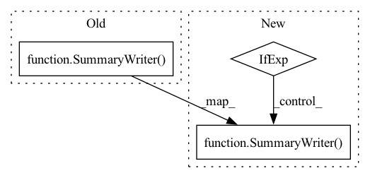

Pattern ID :32378

Before Change
Gen_copy = load_checkpoint(Gen_copy, None, g_ema_checkpoint_dir, ema=True)
Gen_ema.source, Gen_ema.target = Gen, Gen_copy
writer = SummaryWriter(log_dir=join("./logs", run_name))
if cfgs.train_configs["train"]:
assert cfgs.seed == trained_seed, "seed for sampling random numbers should be same!"
if rank == 0: logger.info("Generator checkpoint is {}".format(g_checkpoint_dir))
After Change
Gen_copy = load_checkpoint(Gen_copy, None, g_ema_checkpoint_dir, ema=True)
Gen_ema.source, Gen_ema.target = Gen, Gen_copy
writer = SummaryWriter(log_dir=join("./logs", run_name)) if rank ==0 else None
if cfgs.train_configs["train"]:
assert cfgs.seed == trained_seed, "seed for sampling random numbers should be same!"
In pattern: SUPERPATTERN
Frequency: 3
Non-data size: 3
Instances
Fragment ID: 94530432
Project Name: postech-cvlab/pytorch-studiogan
Commit Name: e7a7a9228c399e2aceac5c7f4315d7a9aaa16b3f
Time: 2020-11-29
Author: first287@naver.com
File Name: src/loader.py
M Class Name: AnonimousClass
N Class Name: AnonimousClass
M Method Name: prepare_train_eval(6)
N Method Name: prepare_train_eval(6)
M Parent Class:
N Parent Class:
M File Name: src/loader.py
N File Name: src/loader.py
M Start Line: 138
M End Line: 138
N Start Line: 38
N End Line: 138
'>
Before Change
start_time = time.time()
writer = SummaryWriter(logdir)
for epoch in range(max_epochs):
// check if we need to stop after N hours
t = time.time()
After Change
start_time = time.time()
writer = SummaryWriter(logdir) if logdir else None
for epoch in range(max_epochs):
// check if we need to stop after N hours
'>
Fragment ID: 94530430
Project Name: tum-daml/synthetic_coordinates
Commit Name: edf579049ba508008a2392eea73d461ac6a54e1d
Time: 2021-11-01
Author: chandan.yeshwanth@tum.de
File Name: deepergcn_smp/icgnn/train_utils/ogb_graphcls.py
M Class Name: AnonimousClass
N Class Name: AnonimousClass
M Method Name: train_eval_model(15)
N Method Name: train_eval_model(15)
M Parent Class:
N Parent Class:
M File Name: deepergcn_smp/icgnn/train_utils/ogb_graphcls.py
N File Name: deepergcn_smp/icgnn/train_utils/ogb_graphcls.py
M Start Line: 26
M End Line: 92
N Start Line: 29
N End Line: 95
'>
Before Change
self._init_path(setting)
self.device = self._acquire_device()
self.model = self._build_model().to(self.device)
self.writer = SummaryWriter(log_dir = os.path.join(self.run_path,
"{}".format(str(datetime.now().strftime("%Y-%m-%d %H-%M-%S")))))
// self.writer = SummaryWriter(log_dir = self.run_path)
def _init_path(self, setting):
self.model_path = os.path.join("./checkpoints/", setting)
After Change
self.model = self._build_model().to(self.device)
self.input_params = args.input_params or inspect.signature(self.model.forward).parameters.keys()
self.target_param = args.target_param
self.writer = SummaryWriter(log_dir = os.path.join(self.run_path,
"{}".format(str(datetime.now().strftime("%Y-%m-%d %H-%M-%S"))))) if not args.debug else Writer()
// self.writer = SummaryWriter(log_dir = self.run_path)
def _init_path(self, setting):
'>
Fragment ID: 94530429
Project Name: hyliush/deep-time-series
Commit Name: 48185e07a9a72bde55f5a1c2ed6e3cf9d68768e9
Time: 2022-04-01
Author: 49185490+hyliush@users.noreply.github.com
File Name: exp/exp_basic.py
M Class Name: Exp_Basic
N Class Name: Exp_Basic
M Method Name: __init__(3)
N Method Name: __init__(3)
M Parent Class: object
N Parent Class: object
M File Name: exp/exp_basic.py
N File Name: exp/exp_basic.py
M Start Line: 17
M End Line: 18
N Start Line: 18
N End Line: 22